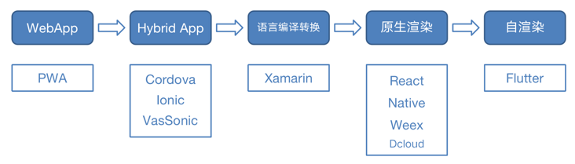
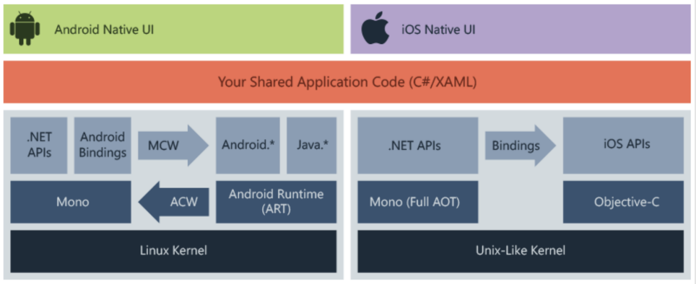

传统移动端开发
传统的app的开发就是指原生开发，需要iOS工程师和Android工程师各自进行，iOS开发一份，Android开发一份，iOS使用的是Objective-C或者是Swift，Android使用的是Java或者是Kotlin。
App原生开发
原生开发的优缺点
- 优点：
- 性能稳定，使用流畅，整体用户体验最佳
- 可支持离线使用
- App质量和安全性有保证
- 开发兼容性好
- 功能齐全，可使用手机所有硬件
- 缺点：
- 开发以及维护成本高
- 开发周期长
- 获得新版本必须重新下载应用
- 内容限制（App Store上架限制）
适用场景
适用于跟系统高度耦合、追求性能的场景。未来前景
由于目前已有的各种跨平台都存在缺陷、不够成熟，加上原生开发在性能上的优势，原生开发暂时还是主流方式。移动端跨平台演进
跨平台技术演进Web App (HTML5）开发
Web App 是指基于 Web 的应用，运行于网络和标准浏览器上，相当于一个网页然后加一个 App 的壳。Web技术本身需要浏览器的支持才能进行展示和用户交互，因此主要用到的技术是HTML5、Java、CSS等。Web App开发优缺点
- 优点：
- 支持设备范围广，可以跨平台
- 开发成本低，周期短
- 无需用户手动更新
- 缺点：
- 无法使用手机硬件和本地存储
- 对网络要求高，无法离线使用
- 反应速度慢，流畅性较差
- 图片和动画支持不高，影响用户使用体验
适用场景
适用于快速试错，需要及时更新同时对性能和流畅度不做要求的场景，或者纯展示页面。未来前景
动态发布、快速试错和不受限于平台，还是具有存在意义的。混合App（原生+H5）开发
混合开发（Hybrid App开发），通常由“HTML5云网站+App应用客户端”两部份构成。混合开发也比较好理解，就是H5与原生开发的结合，主要是用js和原生技术相互调用，可以初步实现跨平台使用的效果，现在我们日常使用当中有很多App都是通过这种方式实现的。混合开发优缺点
- 优点：
- 原生 + H5开发，可兼顾性能和流畅度
- 开发成本相对较低，开发周期比原生开发短
- 可通过JSBridge调用原生API，访问使用手机硬件
- 缺点：
- 依赖WebView，具有不稳定性
- 优化难度不低，需要Web前端、Android开发以及iOS开发团队配合
适用场景
适用于业务场景不复杂、需要动态发布的场景。未来前景
Hybrid App 虽然开发效率高，可以跨平台，但是 Hybrid 体验比不上原生，对于需要快速试错、快速占领市场的团队来说，兼顾原生App和Web App的优缺点，可作为替代原生的方案之一。
特别说明，关于更新部分，目前Android可集成成熟的热更新方案（Google Play除外）；iOS因为App Store审核机制，需要确认热更新方案能否可用。
语言编译转换-Xamarin
Xamarin 是一个开放源代码平台，用于通过 .NET 构建适用于 iOS、Android 和 Windows 的新式高性能应用程序。 Xamarin 是一个抽象层，可管理共享代码与基础平台代码的通信。 Xamarin 在提供便利（如内存分配和垃圾回收）的托管环境中运行。

xamarin架构
Xamarin.Android 应用程序从 C# 编译为中间语言 (IL)，随后在启动应用程序时，再实时编译 (JIT)为本机程序集。 Xamarin.Android 应用程序在 Mono 执行环境中与 Android 运行时 (ART) 虚拟机并行运行。 Xamarin 向 Android. 和 Java. 命名空间提供 .NET 绑定。
Xamarin.iOS 应用程序完全预先 (AOT) 地从 C# 编译为本机 ARM 程序集代码。 Xamarin 使用选择器和注册器（共同称为“绑定”），使 Objective-C 和 C# 可以进行通信。
2.3.1 Xamarin优缺点
- 优点：
- 性能接近原生
- Xamarin.Forms代码复用高达94%
- 强大的企业支持
- 完整的开发生态系统
- 缺点：
- 国内开发文档欠缺
- 第三方SDK的引用相对复杂
- Xamarin社区不完善
- 不适用于重图形应用程序
未来前景
由于市场占有率极低，不推荐使用。原生渲染
React Native
React Native是Facebook公司于2015年4月开源的跨平台移动应用开发框架，它是Facebook早先开源的React框架在原生移动应用平台上的衍生产物，目前主要支持iOS和Android两大平台。
React Native使用JavaScript来编写应用程序，然后调用原生组件执行页面渲染操作，在提高了开发效率的同时又保留了原生的用户体验。
作为一个跨平台技术框架，RN从上到下可以分为Javascript层、C++层和Native层。其中，C++层主要用于实现动态连结库(.so)，作为中间适配层桥接，实现js端与原生端的双向通信交互。RN优缺点
- 优点：
- 支持热更新
- 运行流畅
- 在Javascript和React的基础上获得完全一致的开发体验
- 仅需学习一次，编写任何平台（Learn once, write anywhere）
- 可依赖的第三方库较多
- 缺点：
- 与原生应用相比，多了一层JS解析，渲染慢一些
- 在Android和iOS两端，部分控件不一致
- 对复杂UI不太友好
- 对开发者要求高，除了本身JS的了解，还必须熟悉原生开发
- 需要维护两套代码，代码重用率在70%左右
适用场景
适合业务场景不复杂、页面简单的小项目。Weex
WEEX是由阿里巴巴研发的一套移动跨平台技术框架，最初是为了解决移动开发过程中频繁发版和多端研发的问题而开发的，目前已交由apache托管。
作为一套前端跨平台技术框架，Weex建立了一套源码转换以及Native与Js通信的机制。Weex表面上是一个客户端框架，但实际上它串联起了从本地开发、云端部署到分发的整个链路。
具体来说，在开发阶段编写一个.we文件，然后使用Weex提供的weex-toolkit转换工具将.we文件转换为JS bundle，并将生成的JS bundle上传部署到云端，最后通过网络请求或预下发的方式加载至用户的移动应用客户端。当集成了Weex SDK的客户端接收到JS bundle文件后，调用本地的JavaScript引擎执行环境执行相应的JS bundle，并将执行过程中产生的各种命令发送到native端进行界面渲染、数据存储、网络通信以及用户交互响应。Weex优缺点
- 优点：
- 入门简单，前端和移动开发易上手
- 更轻量，体积小巧
- 有良好的扩展性，比较好扩展新的 Component 和 Module
- 缺点：
- 缺少页面跳转动画
- 现存bug较多
- 社区不成熟，第三方库较少
- 离不开原生开发
适用场景
适用于电商类App、业务场景不复杂、需要动态更新的场景，或者一些单页面。2.5 自渲染-Flutter
Flutter是谷歌公司开源的移动跨平台框架，其历史最早可以追溯到2015年的Sky项目，该项目可以同时运行在Android、iOS和Fuchsia等包含Dart虚拟机的平台上，并且性能无限接近原生平台。
与 react native 和 weex 的通过 Javascript 开发不同,Flutter使用C、C ++、Dart和Skia（2D渲染引擎）构建；旨在帮助开发人员轻松实现恒定的60fps。
得益于 Engine 层，Flutter 甚至不使用移动平台的原生控件， 而是使用自己 Engine 来绘制 Widget （Flutter的显示单元），而 Dart 代码都是通过 AOT 编译为平台的原生代码，所以 Flutter 可以 直接与平台通信，不需要JS引擎的桥接。同时 Flutter 唯一要求系统提供的是 canvas，以实现UI的绘制。Flutter优缺点
- 优点：
- 一套代码搞定iOS和Android应用
- 理论上在跨平台方案上性能最佳，很接近原生
- UI跨平台稳定
- 代码量大大减少
- 缺点：
总结
偏传统开发方案对比
| 原生 | Web | Hybrid | |
|---|---|---|---|
| 适用场景 | 1)偏操作互动多的工具类应用 2)需要访问特定的原生API 3)对应用流畅度和性能有要求 |
1) 作为对非核心业务在移动端的入口补足 2)作为用户轻量低频使用的体验增强 |
1)原生应用的适用场景 2)需要频繁小幅度更新 |
| 开发语言 | native语言 | web开发语言 | native+web开发语言 |
| 开发成本 | 高 | 低 | 中 |
| 体验 | 优 | 差 | 优 |
| 维护更新 | 复杂 | 简单 | 一般 |
| 升级灵活 | 低,一般通过应用商店升级 | 高 | 中,涉及native部分需要通过应用商店升级 |
| 资源存储 | 本地 | 服务器 | 本地+服务器 |
原生渲染与自渲染
| React Native | Weex | Flutter | |
|---|---|---|---|
| 平台实现 | JavaScript | JavaScript | 无桥接，原生编码 |
| 引擎 | JSCore | JS V8 | Flutter engine |
| 核心语言 | React | Vue | Dart |
| bundle文件大小 | 默认单一，较大 | 较小，多页面多文件 | 不需要 |
| 上手难度 | 较难 | 容易 | 一般 |
| 框架程度 | 较重 | 轻 | 重 |
| 特点 | 适合开发整体App | 适合单页面 | 适合开发整体App |
| 支持 | 社区活跃，第三方库较多 | 社区不成熟，第三方库较少 | 发布不久，第三方库较少 |
| 平台 | Android&iOS | web、Android&iOS | Android&iOS（不止于此） |
| issues/open(截至2021.5.6) | 21246/1343 | 940/231 | 53985/8959 |